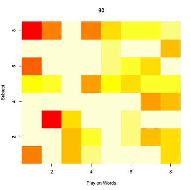
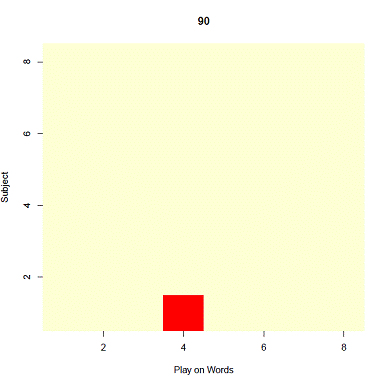

Modeling the Evolution
of Cannibal Jokes with a Genetic Algorithm
Dana Jackman (UMich) and Santiago Olivella (WashU)
1. Introduction
In this project we model the evolution of a specific class of jokes, viz. cannibal jokes. We begin by examining several cannibal jokes.
• Did you hear about the cannibals who passed his brother in the woods?
• Why won’t cannibals eat divorced women? Because they’re very bitter.
• What do cannibals eat for dessert? Chocolate covered aunts.
We note that cannibal jokes are modular. Each joke relies on a play on words (bolded above) and the subject (italicized above) upon which the play on words acts. In addition, we note that the play on words is essential to the funniness of the joke, and the subject must be appropriate (i.e. must match the play on words in some way).
We also note that mixing jokes leads to new jokes, such as
• Did you hear about the cannibals who passed his aunt in the woods?
Inventing new jokes based on modifications of existing jokes leads to more jokes,
• Did you hear about the cannibals who passed his mother-in-law in the woods?
• Did you hear about the cannibal who passed the pope in the woods?
It is clear from the above that some jokes will not be funny to everyone, and some jokes may offend some hearers.
Finally, we note from our personal experience that jokes can be over told, and so lose popularity.
2. Model
2.1.
Representation
The modular structure of cannibal jokes and the ability to mix and insert new elements to create new jokes drives our decision to use a genetic algorithm. Any joke can be visualized as DNA, consisting of two genes. See Figure 1.
Figure 1: Genetic visualization of a cannibal joke
Alternatively, we can present a joke as a pair of numbers {pj, sj} for play on words and subject, respectively. For example, the “cannibal passing his brother in the woods” joke could be given by {7,3} or in binary {111,011}.
2.2.
Key Assumptions and Parameters
We begin with N randomly generated jokes. We then associate with each joke a randomly generated neutrality parameter, pj, designed to capture how offensive the joke may be. We calculate the popularity of each joke in the population, and compare each joke’s prevalence to a saturation parameter, t. If a joke’s popularity exceeds the saturation threshold, we consider it to be over told and reduce its frequency in the population (to a single instance of the joke).
We then determine the funniness of every joke, and sample pairs of jokes from the population (with replacement) in proportion to funniness(i.e. roulette sampling); funnier jokes are more likely to be selected than less funny jokes. These pairs of jokes (i.e. parents) produce two new jokes (i.e. offspring). New jokes may be clones of the parents, may reflect recombination of the parent jokes, or may result from mutation (i.e. innovation or mistakes) of these offspring. The probability of recombination is given by an exogenously specified crossover parameter, pc, and the location of the crossover is randomly generated every time. The probability of mutation is given by the exogenously set parameter, pm. The offspring jokes are retained and the parent jokes are eliminated in order to form the new generation.
Funniness is clearly a nontrivial concept. We, nevertheless, attempt to capture the core elements of funniness in a funniness function, F(pj, sj, &pij) that serves as the fitness function of the genetic algorithm. We define, F(pj, sj,&pij) = pj + &pijr(pj, sj) where r(pj, sj) = 1 if pj and sj are both even or both odd and 0 otherwise. This specification reflects the importance of the play on words, the relatedness of the play on words and the subject, and the neutrality of the joke. Neutrality, &pij, can be interpreted as the proportion of the human population who would find the joke acceptable, or similarly, the probability that the hearer would not be offended by the joke.
3. Results
We fix the crossover and mutation parameters to be pc = 0.7 and pm = 0.01. We also fix the number of jokes at any given generation at N = 500. Each run of the model consists of 90 iterations. We then generate results for different saturation thresholds from 0.1 to 0.9, incrementing by 0.1. The R code used to perform the simulations, as well as generate the graphics, is available here
We arrive at three core results, regarding joke persistence and average funniness. First, when the saturation threshold is low, multiple jokes persist. When the saturation threshold is high, only one joke persists. The intuition of this result is that when the human population has a preference for novelty or less repetition in the jokes they hear, more jokes survive. When the human population is more complacent, fewer jokes persist because incentives for novelty are low. Figures 2a and 2b show the jokes that persist after 90 generations for t = 0.1 and t = 0.9, respectively. The vertical axis represents the subject of the joke, the horizontal axis represents the play on words; each square is therefore a distinct joke. Darker colors (brown and red) represent greater popularity (i.e. greater relative frequency in the joke population), with red being the highest. Lighter colors (yellow and white) represent lower (or no) popularity.
Figure 2a: Joke popularity after 90 iterations with saturation threshold of 0.1

Figure 2b: Joke popularity after 90 iterations with saturation threshold of 0.9

Second, jokes that persist in the presence of other jokes tend to have high values for play on words. This result is also observable in Figures 2a and is consistent with our assumption, embedded in the funniness function, that play on words is very important to funniness. The low value of play on words in the scenario with high t is likely a result of minimal selection pressure as described below.
Third, the average funniness of jokes, after 90 iterations, tends to be higher for intermediate saturation thresholds and lower at extreme saturation thresholds. In fact, low saturation threshold not only leads to relatively low funniness after 90 iterations, but is relatively flat throughout the model run. The intuition for low saturation thresholds is that low thresholds force the prevalence of all jokes, good and bad, to remain too low to adequately invade the population. High saturation thresholds lead to more variability in funniness over time, but low funniness at the end of 90 iterations. The intuition here may be that high thresholds permit the proliferation of funny and less funny jokes, but the complacency implied by the high threshold doesn’t select heavily enough for very funny jokes. Intermediate saturation thresholds appear to suffer neither of these shortcomings. The solid line in Figure 3 illustrates the average funniness in every generation for five runs of the model. The dotted lines show 90% confidence intervals obtained from multiple runs of the model using the same parameters.
Figure 3: Average funniness for saturation thresholds 0.1, 0.5, and 0.9

While the very limited number of experiments conducted and presented here yield some interesting results, we believe that a more thorough examination of the parameter space would be interesting and perhaps even more revealing. For example, the crossover rate for cannibal jokes may be much lower than 0.7 while the rate of mistakes or invention is much higher than 0.01.
4. Extensions
Potential extensions of the model are numerous. First, it is clear that the very simple representation of jokes could be enhanced to better reflect the nuance of jokes and language. Inspection of a long list of cannibal jokes reveals that there are several classes of cannibal jokes. Additional modules that capture those differences might lead to more realistic results. In addition, we recombine jokes randomly. Given the nature of language and jokes, it may make more sense to define an alternate means of determining nature of crossovers.
Second, all parameters are exogenous. It may be reasonable to generate some of these values endogenously. For example, it may be more realistic to tie rate of mutation to joke distributions and the prevalence threshold. Crossover rates and mutation rates may depend strongly on the human population in which these jokes reside (think of five year olds versus adults). Perhaps crossover and mutation rates could depend on some representation of the human population – a population that is diverse, ages, and responds to joke distributions.
Third, the neutrality of each joke is randomly generated. It may be possible to endogenously generate neutrality.
Fourth, though not entirely arbitrary, the funniness function is not at all realistic. Alternatives to the funniness function include 1) other mathematical specifications, 2) constructing and training a neural network to rate funniness, or 3) employing many individuals through the use of the internet to rate each generation of jokes.
5. Applications
We use six characteristics of this model to identify other applications: modularity, recombination, mutation, fitness, and a prevalence threshold. Thus, other language based applications of this model could include other forms of jokes (e.g. “knock knock” jokes, “why did the chicken cross the road?” jokes, and less formulaic jokes). Fads, such as fashion, ideas, and consumer products are somewhat obvious applications.
A timely social science application is the communication of climate change messages in the media. Specifically, media messages regarding climate change consist of various scientific, social, and political elements such as temperature, migration, and taxation. Messages in the media about climate change consist of some combination of these types of ideas that can be recombined from one time period to the next. New information and mistakes, akin to mutation, also occur in each time step. Effectiveness (a.k.a. fitness) of these messages could be measure in terms of the media recipients’ level of understanding of climate issues, and saturation thresholds could be determined an implemented that reflect the tendency to ignore or reject messages when they are overly prevalent.
Finally, the modular nature of our model could make it appropriate to study the generation of omnibus legislation in congress, and particularly the cosponsorship patterns that such bills present. Saturation in our model can be construed as a cap on the number of bill cosponsors that are acceptable to the system, which is known to go down as the ideological polarization increases. It has been shown (e.g. Krutz 2001) that things like issue fragmentation within committees (produced, among other things, by ideological polarization) leads to greater frequency and diversity of omnibus bills, which is therefore consistent with our finding that lower saturation thresholds (i.e. lower acceptable number of cosponsors) is related to a greater diversity of popular jokes.